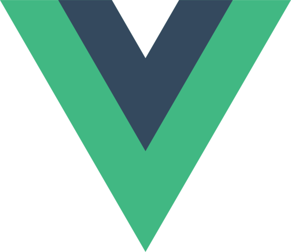
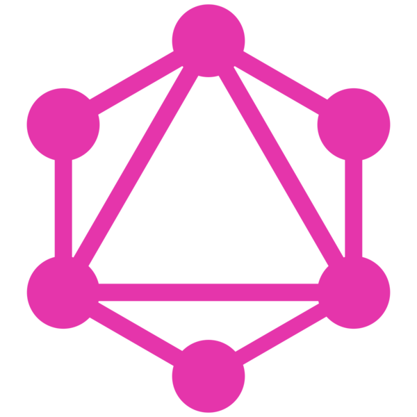
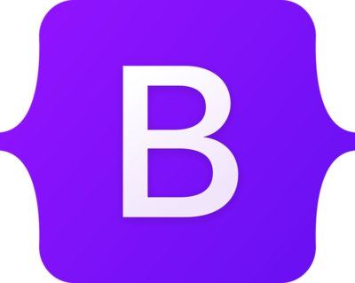

React
React is a free and open-source front-end JavaScript library for building user interfaces based on UI components. It is maintained by Meta and a community of individual developers and companies.

WordPress
WordPress is a free and open-source content management system written in hypertext preprocessor language and paired with a MySQL or MariaDB database with supported HTTPS. Features include a plugin architecture and a template system, referred to within WordPress as "Themes".
Learn more
Vue js
Vue.js is an open-source model–view–viewmodel front end JavaScript framework for building user interfaces and single-page applications. It was created by Evan You, and is maintained by him and the rest of the active core team members.
Learn more GraphQL
GraphQL is an open-source data query and manipulation language for APIs, and a runtime for fulfilling queries with existing data. GraphQL was developed internally by Facebook in 2012 before being publicly released in 2015.
Learn more TypeScript
TypeScript is a free and open source programming language developed and maintained by Microsoft. It is a strict syntactical superset of JavaScript and adds optional static typing to the language. It is designed for the development of large applications and transpiles to JavaScript.
Learn moreBootstrap
Bootstrap is a free and open-source CSS framework directed at responsive, mobile-first front-end web development. It contains HTML, CSS and JavaScript-based design templates for typography, forms, buttons, navigation, and other interface components.
Learn more 